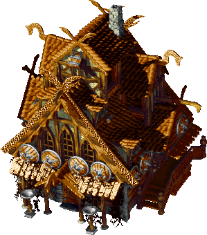
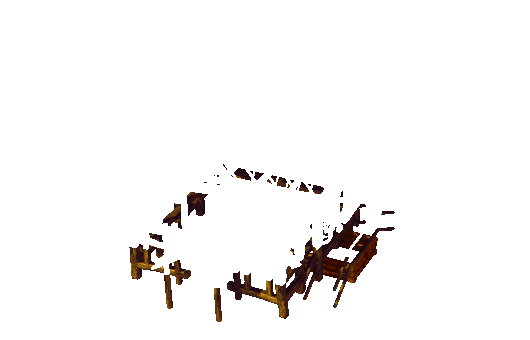
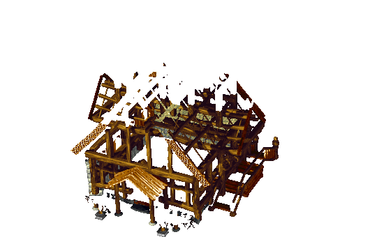
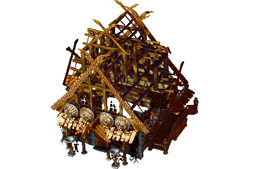
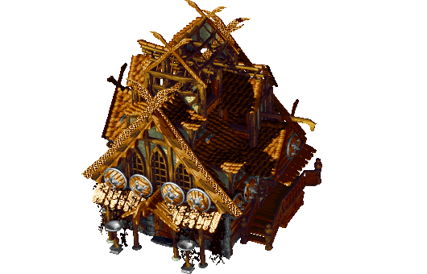
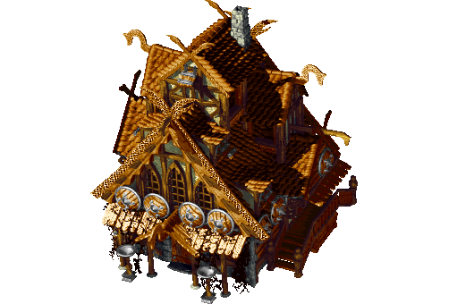

Native nameviking homeTribeVikingsGfxHouse / logic House3 / 6Level4Body BOB41 in data\engine2d\bin\bobs\ls_houses_viking.bmdShadowdata\engine2d\bin\bobs\ls_houses_viking_s.bmd BOB 41Dimensions / pivot299x340 pivot [139, 241]Paletteshouse01Palette ruleHouse unique ID modulo palette count, then lighting/shading table (0x00495B57); all native palettes exportedStatusPIXEL_CONFIRMEDConfidence per field{"body": "AUTOMATED_CONFIRMED", "sourceMapping": "AUTOMATED_CONFIRMED", "pivot": "AUTOMATED_CONFIRMED", "runtimePivot": "PARTIAL", "shadow": "PARTIAL", "construction": "PARTIAL", "doors": "PARTIAL", "animation": "PARTIAL", "effects": "PARTIAL", "overall": "PARTIAL"}Errorsnone
Finished body (all native palettes)

Shadow coverage (DATA mask)
Construction progress (body only; PREVIEW checkerboards separate)





All exported files of this level
25 PNG files + metadata
construction/layers/auxiliary_threshold_000045.pngconstruction/layers/house01/body_000042.png
construction/layers/house01/body_000043.png
construction/layers/reveal_000042.png
construction/layers/reveal_000043.png
construction/PREVIEW_progress_000_checkerboard.png
construction/PREVIEW_progress_010_checkerboard.png
construction/PREVIEW_progress_025_checkerboard.png
construction/PREVIEW_progress_050_checkerboard.png
construction/PREVIEW_progress_075_checkerboard.png
construction/PREVIEW_progress_100_checkerboard.png
construction/progress_000.png
construction/progress_000_destination_darken_counts.png
construction/progress_010.png
construction/progress_010_destination_darken_counts.png
construction/progress_025.png
construction/progress_025_destination_darken_counts.png
construction/progress_050.png
construction/progress_050_destination_darken_counts.png
construction/progress_075.png
construction/progress_075_destination_darken_counts.png
construction/progress_100.png
construction/progress_100_destination_darken_counts.png
shadow/coverage_000041.png
states/door/house01/frame_000044.png
metadata.json
shadow/metadata.json
construction/metadata.json
states/metadata.json
animation/animation.json
effects/metadata.json